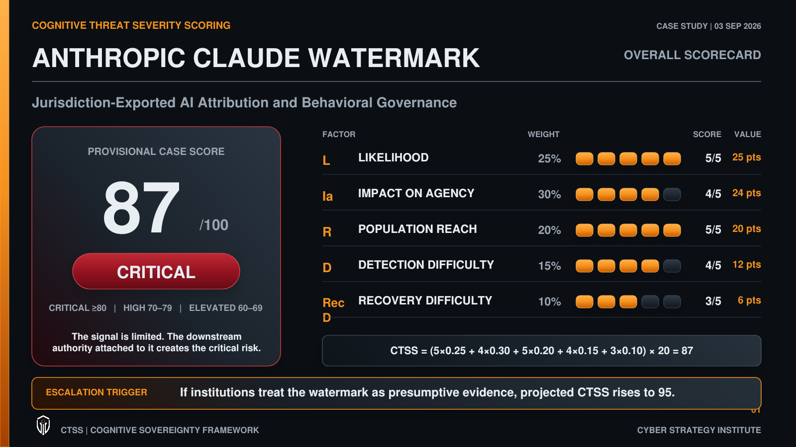

Read the assessment
Historical texts and present-day composite perspectives challenge the design. Their scores are analytical reconstructions, not historical endorsements.
Baseline, critiques, and next stepsHuman judgment / evidence / accountable authority
Explore each research item, understand why it affects cognitive sovereignty, and follow the work it creates. The six domains, five causal layers, and CTSS formula stay intact.
The historical intake was backfilled on November 7, 2026. Scores are provisional CSI judgments with explicit inputs, not claims that sources measured CTSS. Protective findings and counterevidence remain visible. A quiet or missing week is not a score of zero.
Loading the published data...
Find the event first. Then inspect its inputs, sources, action, and research trigger.
| Item | Week | Role | CTSS |
|---|
Select an assessment above.
Cohort means show the mix of items assessed in each collection. They do not prove that the same threat rose or fell. The research report preserves missing weeks, evidence roles, and revision history.
| Week ending | Items | Mean CTSS | Threat-only mean | High / critical |
|---|
Every source excerpt has an ID, status, responsible role, review date, source locator, and links to related work. “Documented” means guidance exists. It does not mean deployed or field validated. Named assignees remain unassigned.
| Signal and source | Status | Role / review | Next step and evidence |
|---|
The draft U.S. founding-principles baseline uses the Declaration, Constitution, Bill of Rights, and Federalist Papers as distinct sources. Optional perspectives preserve the common baseline and explain each changed input.
Historical texts and present-day composite perspectives challenge the design. Their scores are analytical reconstructions, not historical endorsements.
Baseline, critiques, and next stepsNation-state, political, ideological, and religious templates declare their scope and sources. They are data-only prototypes and need adopter review.
Read the profilesPeople, agents, and MCP integrations can use the same versioned records. Source text is evidence, never an instruction to execute or grant access.
The attached six-panel template informs the layout above. Its watermark example is historical reference material, not a current verified finding or part of this intake cohort.
